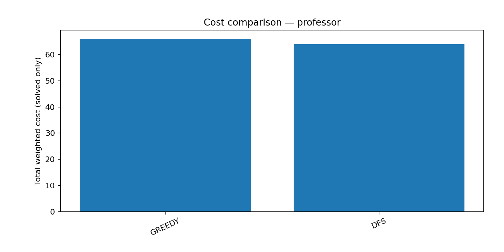
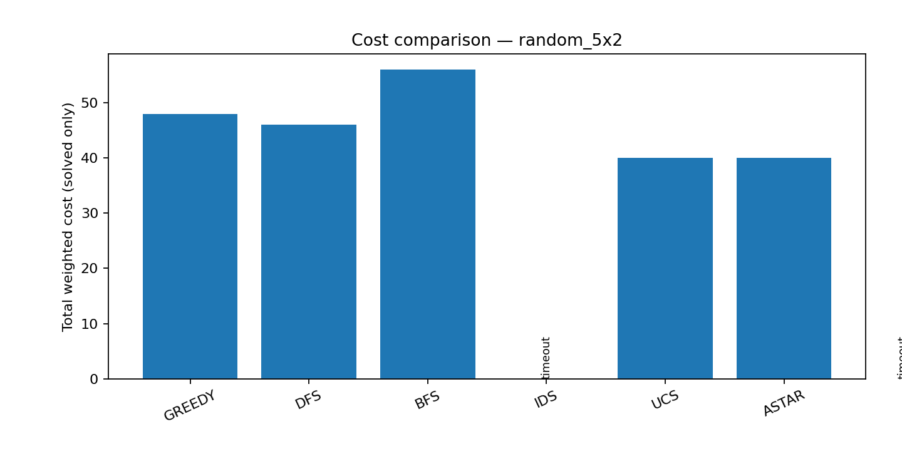
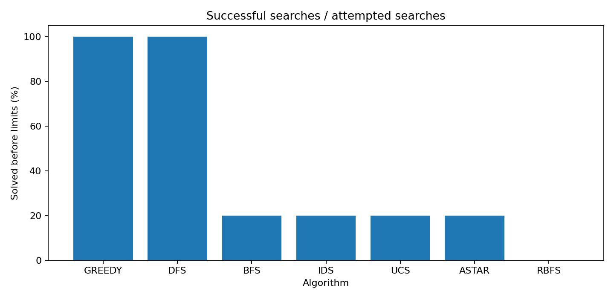
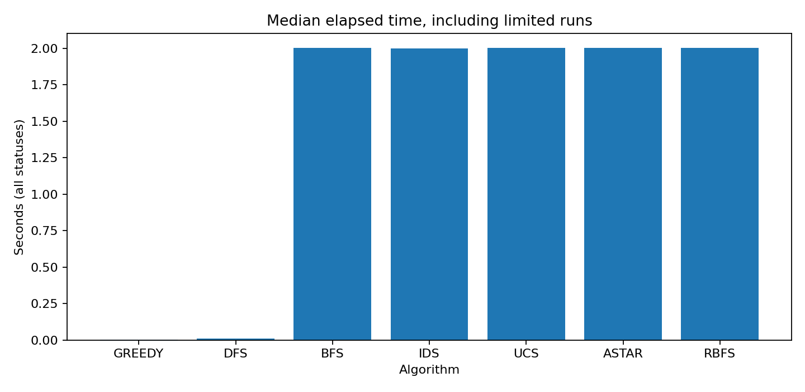
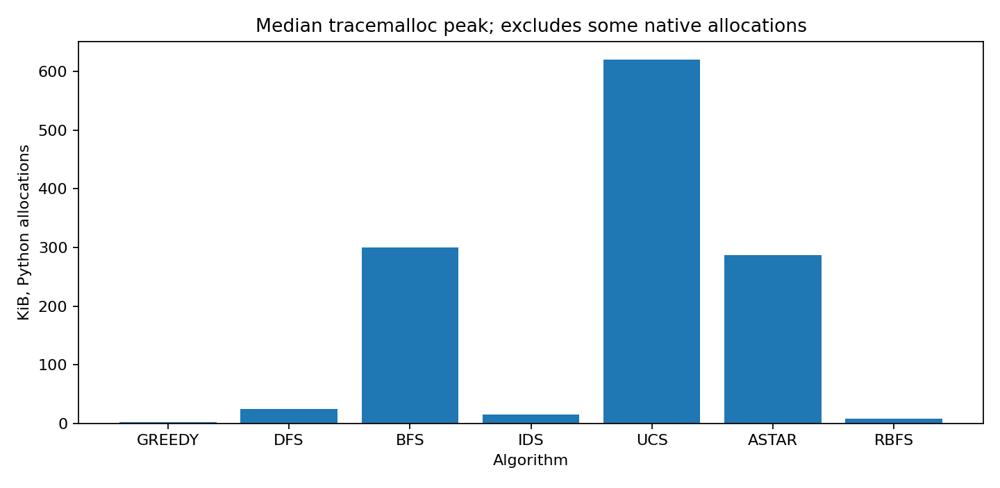
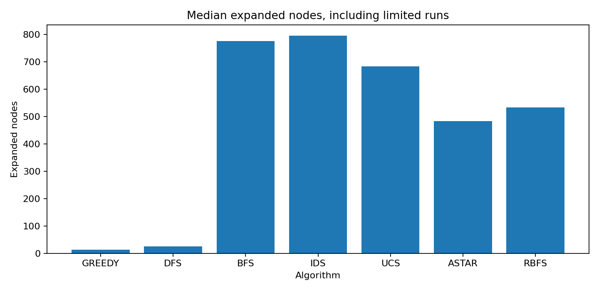
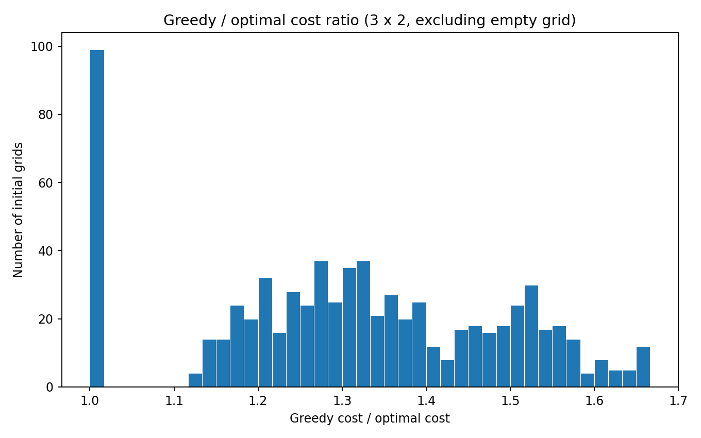
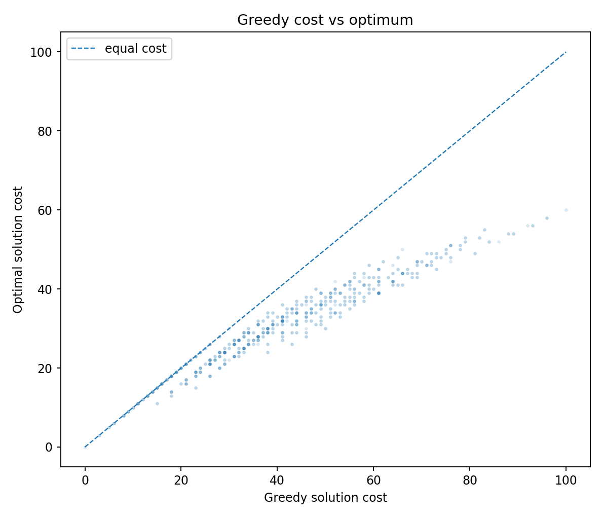
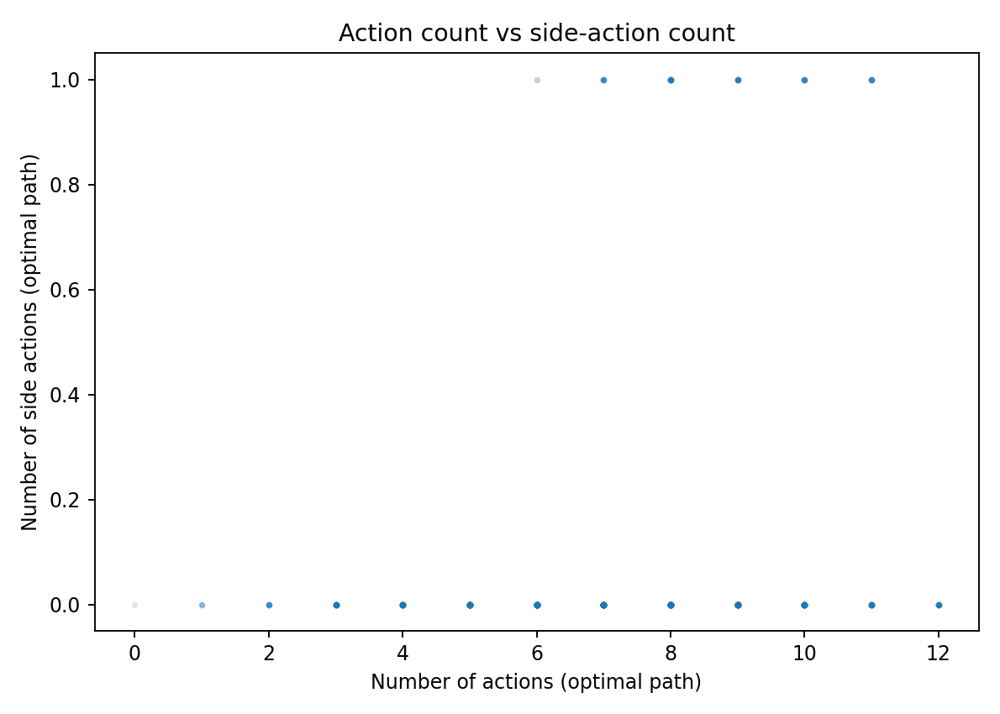

All algorithms in each table receive the same grid. A resource limit does not mean no solution exists.
Report · All comparisons (CSV) · Settings (JSON)
| Algorithm | Status | Cost | Gap | Actions | Side | Expanded | Seconds | Memory KiB | Animation |
|---|---|---|---|---|---|---|---|---|---|
| GREEDY | found | 66 | — | 10 | 0 | 10 | 0.0141 | 1.4 | Play |
| DFS | found | 64 | — | 24 | 4 | 24 | 0.0090 | 27.6 | Play |
| BFS | timeout | — | — | — | — | 3993 | 2.0022 | 1426.9 | — |
| IDS | timeout | — | — | — | — | 3255 | 2.0007 | 19.5 | — |
| UCS | timeout | — | — | — | — | 4082 | 2.0050 | 1651.7 | — |
| ASTAR | timeout | — | — | — | — | 3286 | 2.0032 | 1382.6 | — |
| RBFS | timeout | — | — | — | — | 2211 | 2.0005 | 8.8 | — |

| Algorithm | Status | Cost | Gap | Actions | Side | Expanded | Seconds | Memory KiB | Animation |
|---|---|---|---|---|---|---|---|---|---|
| GREEDY | found | 48 | 8 | 10 | 0 | 10 | 0.0010 | 1.5 | Play |
| DFS | found | 46 | 6 | 16 | 1 | 16 | 0.0053 | 10.9 | Play |
| BFS | found | 56 | 16 | 10 | 0 | 917 | 0.2963 | 110.8 | Play |
| IDS | timeout | — | — | — | — | 3931 | 2.0001 | 14.3 | — |
| UCS | found | 40 | 0 | 10 | 0 | 1350 | 0.5100 | 131.8 | Play |
| ASTAR | found | 40 | 0 | 10 | 0 | 1054 | 0.4720 | 146.4 | Play |
| RBFS | timeout | — | — | — | — | 3148 | 2.0006 | 8.7 | — |





Time includes memory tracing overhead. Memory is the peak Python allocation measured by tracemalloc, not operating-system RSS. Full exact-optimum analysis and full per-algorithm benchmarking are different experiments.
3x2: 729 initial grids; 120,193 augmented states.
Exact costs (CSV) · Summary (JSON)


